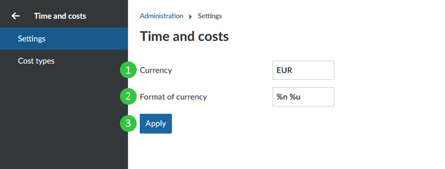
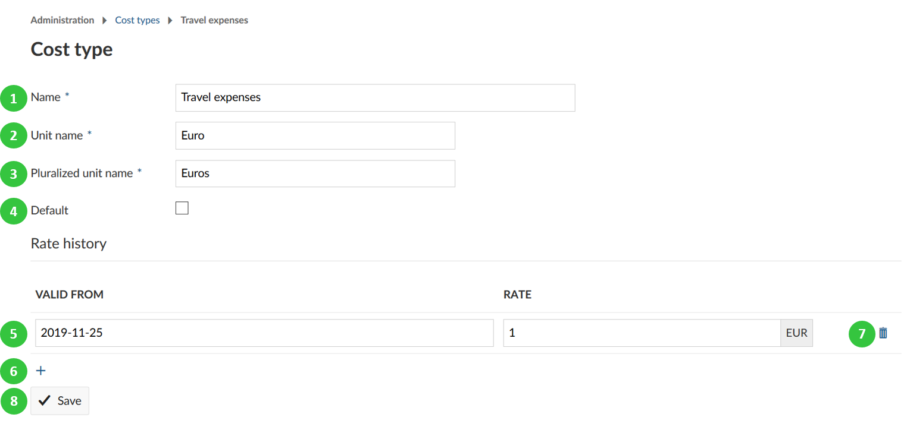
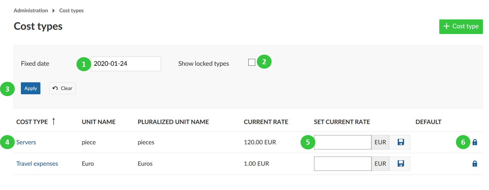

Time and costs
You can configure costs in OpenProject and create cost types to track unit costs. Also, you can configure the currency you want to use for your cost reports.
Navigate to -> Administration -> Time and costs.
Settings
Navigate to -> Administration -> Time and costs -> Settings to define settings for OpenProject costs.
- Configure the currency used in the system, e.g. EUR.
- Specify the format of the currency, if the number should be before or after the currency, e.g. 10 EUR, or $ 10.
- Press the blue Apply button to save your changes.

Create and manage cost types
You can create and manage cost types to book unit costs to work packages in OpenProject.
Navigate to -> Administration -> Time and costs -> Cost types to create and manage unit costs types.
Click the green + Cost type button to create a new cost type.
You can set the following options:
- Enter a name for the cost type.
- Define the unit name for this cost type, e.g. Euro, piece, day, etc.
- Set the pluralized unit name, e.g. Euros, pieces, days, etc.
- Choose if the cost type should be the default cost type when booking new unit costs.
- Define the Rate history and set a date from which this cost type should be valid and set a rate (in the specified unit) for this date.
- With the + icon you can add additional rates for other dates.
- The delete icon will remove a rate for a certain date.
- Do not forget to save your changes.

In the overview list of all cost types you can define the following.
- Filter for cost types at a certain fixed date in the list
- Choose whether also locked cost types should be displayed
- Press the blue apply button: This way you will get the cost types with the rate (at the chosen fixed date) displayed in the list below.
- Click on the name of a cost type to edit an existing cost type.
- Set a current rate (for the current valid from period) and press the save icon to apply it.
- Lock a cost type.
Please note that you can only lock but not delete cost types.

**Note**: With cost types you can also book any kind of units to work packages, e.g. vacation days, leaves, travel days, etc.. Just choose 1 as a unit. This way, you could e.g. track vacation days against a vacation budget and evaluate the days in the [cost reporting](../../user-guide/time-and-costs/reporting/).